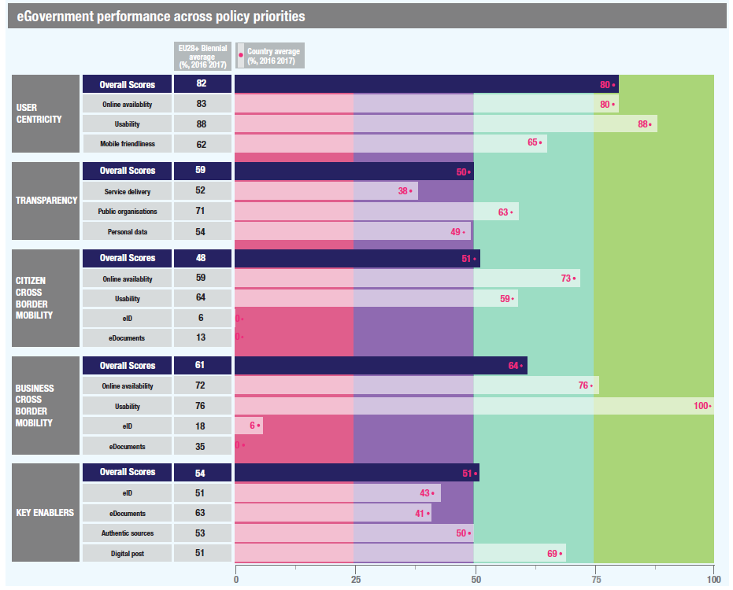

Digital Government Factsheet 2019
Luxembourg
Table of Contents
Digital Government Highlights 6
Digital Government Political Communications 8
Digital Government Legislation 13
Digital Government Governance 17
Digital Government Infrastructure 23
Digital Government Services for Citizens 28
Digital Government Services for Businesses 38
Country Profile
Basic data
Population: 602 005 inhabitants (2018)
GDP at market prices: 58 869 million Euros (2017)
GDP per inhabitant in PPS (Purchasing Power Standard EU 28=100): 253 (2017)
GDP growth rate: 1.5% (2017)
Inflation rate: 2% (2018)
Unemployment rate: 5.3% (2018)
General government gross debt (Percentage of GDP): 23% (2017)
General government deficit/surplus (Percentage of GDP): 1.4% (2017)
Area: 2.600 km²
Official EU languages: French, German
Currency: Euro
Source: Eurostat (last update 15 March 2019)
Digital Government Indicators
The following graphs present data for the latest Generic Information Society Indicators for Luxembourg compared to the EU average. Statistical indicators in this section reflect those of Eurostat at the time the Edition is being prepared.
Percentage of individuals using the Internet for interacting with public authorities in Luxembourg | Percentage of individuals using the Internet for obtaining information from public authorities in Luxembourg |
Percentage of individuals using the Internet for downloading official forms from public authorities in Luxembourg | Percentage of individuals using the Internet for sending filled forms to public authorities in Luxembourg |
Digital Government State of Play
The graph below is the result of the latest eGovernment Benchmark report, which monitors the development of eGovernment in Europe, based on specific indicators. These indicators are clustered within four main top-level benchmarks:
User Centricity – indicates to what extent (information about) a service is provided online and how this is perceived.
Transparency – indicates to what extent governments are transparent regarding: i) their own responsibilities and performance, ii) the process of service delivery and iii) personal data involved.
Cross-Border Mobility – indicates to what extent EU citizens and businesses can use online services in another country.
Key Enablers – indicates the extent to which five technical pre-conditions are available online. There are: Identification (eID), Electronic documents (eDocuments), Authoritative Sources, and Digital Post. Digital Post refers to the possibility that governments communicate electronically-only with citizens or entrepreneurs through e.g. personal mailboxes or other digital mail solutions.
These top-level benchmarks are measured using a life-events (e.g. mystery shopping) approach. Eight life events are included in the overall eGovernment performance score. Four of these life events were measured in 2013, 2015 and 2017 and the other four were measured in 2012, 2014, 2016, and again in 2018. The life events measured in 2017 were Regular business operations, Moving, Owning and driving a car and Starting a small claims procedure. The life events measured in 2018 are Business start-up, Losing and finding a job, Family life and Studying.

Source: eGovernment Benchmark Report 2018 Country Factsheets
Digital Government Highlights
Digital Government Political Communications
The third national strategy on Cybersecurity was approved and implemented for the period 2018-2020.
A 5G taskforce was established and a national 5G strategy was defined and launched on 12 September 2018.
Digital Government Legislation
The law on electronic invoicing in public procurement and concession contracts passed on 26 March 2019.
The Law of 14 September 2018 relating to a transparent and open administration defined the framework for the implementation of a policy of opening up to citizen’s administrative documents held by government departments, municipalities, local authorities and public institutions placed under the supervision of the State or under the supervision of the municipalities.
A new Law amending the amended Law of 1 August 2001 on the circulation of securities was published on 1 March 2019. The purpose of this new law was to create a legal framework enabling the circulation of securities created by new secure electronic registration technologies, in particular those based on the ‘Blockchain’, with the aim of increasing legal certainty in this area.
Digital Government Governance
A Ministry of Digitalisation was put in place to promote ICT and contribute to the development of digital infrastructure.
Prime Minister Xavier Better became Minister for Digitalisation.
Marc Hansen also became Minister Delegate for Digitalisation.
Digital Government Infrastructure
The new Cybersecurity Competence Centre (C3) promoted the national cybersecurity ecosystem by focusing on three areas of expertise: observation, training and testing.
Among other websites, the portals guichet.lu, douanes.public.lu and fonction-publique.public.lu were relaunched in 2018.
Digital Government Services for Citizens and Businesses
Informing the Ministry of Foreign and European Affairs of a decision to stay abroad;
Applying for a certificate of authenticity concerning a driving licence;
Online payment of a standard fine;
Contesting a fine or penalty notice when caught by a speed camera;
Registering on the electoral rolls;
Application to vote by post;
Consultation and/or modification of the bank details indicated to the Children’s Future Fund (CAE);
Receive certain official documents in electronic format.
New version of applying for a business permit;
Online services for maritime companies;
Mandatory reporting of infectious diseases;
Cooperation of professionals in the fight against money laundering;
Declaration of withholding tax on directors' fees;
Declaration of apprenticeship vacancy;
Digital Government Political Communications
Specific political communications on digital government
Einfach Lëtzebuerg
In line with the administrative simplification efforts of recent years, the government decided to intensify efforts to improve public services, with the goal of meeting expectations of users, citizens and companies. Einfach Lëtzebuerg is a programme, adopted in 2016, and dedicated to the modernisation of public administration. It aims to:
Actively involve the citizen in the discussion process;
Reduce administrative and regulatory burdens;
Simplify and improve the design and quality of legislation and processes.
To achieve these objectives, the programme is structured around the following elements:
A selective and strategic review of existing legislation;
Pragmatic and effective quality control:
More transparency and consultation;
A strategic and intelligent digitisation of procedures;
Alignment with the principles pursued at the international level, especially the EU level.
The platform www.vosidees.lu, created in 2014, allows the government to collect public propositions and suggestions.
Digital Lëtzebuerg
Part of the Strategy is the adoption by the Government Council in September 2015 of three strategic principles in the context of digital government: Digital by default, Once Only and Transparency.
Strategic vision for artificial intelligence and data-driven innovation strategy
On 24 May 2019, Prime Minister Xavier Bettel and Deputy Prime Minister Etienne Schneider presented the political guidelines for both artificial intelligence and for the ongoing digitisation of priority economic sectors, in order to support the emergence of a sustainable and trusted national economy.
- Become one of the most digitally advanced societies in the world, in particular within the European Union.
- Establish Luxembourg as a sustainable, data-driven economy.
- Support the development of AI with a human-centred approach.
- Boosting and assuring digital infrastructure capacity.
- Experimenting, innovating and up-take of new advanced digital technologies into industry.
- Ensure a strong regulatory, intellectual property, investment and financing environment.
Key enablers
Access to public information
No political communication was adopted in this field to date.
eID and Trust Services
No political communication was adopted in this field to date.
Security aspects related to digital government
Third National Cybersecurity Strategy
On 8 May 2018, the Prime Minister, Minister of State and the High Commissioner for National Protection presented the guidelines for the 3rd national cybersecurity strategy for 2018-2020. It illustrated the government’s response to the challenges and transformations that characterise a digital environment in constant change. The strategy focuses on the following three central guidelines:
Guideline 1 — Public confidence building in the digital environment (creating trust through digital skills)
- Objective 1: Sharing of knowledge between all actors
- Objective 2: Dissemination of risk information
- Objective 3: Raising awareness of all stakeholders
- Objective 4: Responsible disclosure
- Objective 5: Fight against cybercrime
Guideline 2 — Digital Infrastructure Protection (protection of the IT environment)
- Objective 1: Identification of critical and critical digital infrastructure
- Objective 2: Security policies
- Objective 3: Crisis management
- Objective 4: Standardisation
- Objective 5: Improving international cooperation.
- Objective 6: Cyber defence
- Objective 7: Strengthening the resilience of the State’s digital infrastructure
Guideline 3 — Promotion of economic place
- Objective 1: Creates new products and services
- Objective 2: Pooling of security infrastructure
- Objective 3: Requirements benchmarks and supervisor
- Objective 4: Creation of the Cybersecurity Competence Centre (C3)
- Objective 5: Risk management and informed governance
- Objective 6: Training and training aids
- Objective 7: Collaboration between Information Security Officers
- Objective 8: Incident response collaboration between experts
- Objective 9: Research priority: start-ups
- Objective 10: Code disassembly and identification of vulnerabilities
Interconnection of base registries
No political communication was adopted in this field to date.
eProcurement
No political communication was adopted in this field to date.
Domain-specific political communications
Digital (4) Education Strategy
On 20 May 2015, the Minister of Education, Children and Youth, presented the Digital Strategy for Education. This strategy had two key objectives:
- To prepare young people for work in a complex and constantly changing environment (under the “digital education” umbrella);
- To promote new learning strategies, software, and innovate educational projects (under the “digital for education” umbrella).
Other projects under the Digital Education Strategy include training teaching staff and offering access to digital teaching resources as part of eduSphere, the introduction of a maths teaching software (for cycle 4) to be used at home and at school as part of MathemaTIC and Digital Classroom Lëtzebuerg, providing comprehensive computer literacy training enabling students to better manage their lives through digital tools. Further projects include Makerspaces in schools, FutureHub labels for schools committed to new technologies and an online teaching/learning platform.
Policy of Digital Inclusion
eHealth Strategy
The Government is promoting a national health strategy to facilitate the exchange and secure electronic sharing of health data between health professionals and patient, and also to enable better monitoring and better coordination of the patient’s healthcare. In pursuit of this objective, the National Agency for Shared Health Information (eSanté) has developed and implemented the National eHealth Platform, which includes basic urban development components pooled in the different cases of use and various users of health services.
Interoperability
Emerging technologies
EuroHPC
Artificial Intelligence (AI) Strategy & NVIDIA partnership
The Government is currently preparing a comprehensive, national strategy for artificial intelligence.
Blockchain
Fibre-to-the-home (FTTH)
A fibre-to-the-home (FTTH) rollout was quickly connected 60% of households. A 5G taskforce was established and a national 5G strategy was defined and launched on 12 September 2018.
The 5G CroCo Project
Upcoming strategies
Digital Government Legislation
Specific legislation on digital government
No legislation was adopted in this field to date.
Key enablers
Access to public information
Re-use of Public Sector Information (PSI)
The Law of 23 May 2016 on the re-use of Public Sector Information amended the law of 4 December 2007.
Electronic archiving
The law on electronic archiving of 25 July 2015 (Law of 25 July 2015 relating to electronic archiving and amending: 1. Article 1334 of the Civil Code; 2. Article 16 of the Commercial Code; 3. the amended law of 5 April 1993 on the financial sector.)
Access to information
The law relating to a transparent and open administration was adopted on 14 September 2018. The purpose of the new law was to define the framework for the implementation of a policy for opening a citizen’s administrative documents held by government departments, municipalities, local authorities and public institutions and placed under the supervision of the State or under the supervision of the municipalities.
eID and Trust Services
eIDAS
The Council approved on 1 March 2019 a Draft Law revising the amended law of 14 August 2000 on electronic commerce. This was done to bring Luxembourgish legislation in line with Regulation (EU) No 910/2014 of the European Parliament and of the Council of 23 July 2014 on electronic identification and trust services for electronic transactions in the internal market, known as eIDAS.
The eIDAS Regulation provided the EU with a comprehensive transnational and cross-sector framework to increase trust in the electronic exchange of trust services within the EU and to promote the functioning of the internal market and legal certainty.
Luxembourg has implemented the eIDAS and was among the first Member States who declared use of their eID scheme.
eCommerce Act
The eCommerce Act of 14 August 2000, complemented by a regulation of 1 June, 2001 on electronic signatures and electronic payments, transposed the EU Directive on Electronic Signatures (1999/93/EC).
The eCommerce Act explicitly mentioned two types of eSignatures: 1) a basic type, which consists of a ‘set of data which is linked to the deed in a non-dissociable way and warrants the integrity of the deed […] The electronic signature must also ensure the signatory is identified and show the latter's obvious consent to the content of the deed’, and 2) an eSignature ‘supported by a qualified certificate, which must be created with a secure signature creation device under the sole control of the subscriber’.
Certification service providers can only issue certificates with the approval of the National Accreditation and Supervision Authority. Approved (qualified) certificates are valid for a maximum duration of three years and must be archived by the certification service provider for at least 10 years. Also, the certification providers have to submit to periodic external security audits.
eSignatures supported by a qualified certificate have the same legal validity as a handwritten signature, and the eCommerce Act rendered void all laws and regulations that challenged the validity of a contract because it was electronically signed.
The Act's primary importance resided in recognition of eSignatures and eContracts. Unlike the Directive it was based on, it did not use the term ‘advanced’ eSignature but rather recognised a ‘qualified’ level of eSignature. It also differs from the Directive and similar legislation in other Member States, insofar as it legally recognised electronic wills and electronic deeds and implemented a customer's right to withdraw from an electronic contract within seven days after its creations, free of questions and penalties, with full reimbursement of any money paid to the seller.
The Act closely followed the Directive in terms of information requirements from seller to customer, the seller's obligation to acknowledge reception of an order, the rules governing the liability and confidentiality requirements for certificate issuers (domestic and foreign), and provisions concerning the auditing and accreditation of certificate issuers.
Security aspects related to digital government
EU General Data Protection Regulation (GDPR)
In May 2018, the EU General Data Protection Regulation entered into force in the whole EU and therefore also in Luxembourg. In Luxembourg, the National Commission for Data Protection (CNPD), an independent authority for the protection of individuals with regard to the processing of personal data, acts as data controller to fulfil certain requirements regarding the form and the content.
Law of 1 August 2018 on the organisation of the National Commission for Data Protection and the General Data Protection Scheme
A new law, the Act of 1 August, 2018 on the organisation of the National Data Protection Commission and the general data protection framework repealed the previous act on data protection (amended Act of 2 August 2002) and completed the General Data Protection Regulation at the national level.
The aim of the Law of 1 August 2018 was to invest the National Commission for Data Protection (CNPD) with extended tasks conferred on it by the GDPR and give it greater powers. Second, it defined the legal framework for the specific provisions of Luxembourg law, and in particular those relating to the supervision of employees.
Amended Act of 30 May 2005 (data protection and electronic communications)
The Amended Act of 30 May 2005, concerning the specific provisions for protection of the individual in respect of the processing of personal data in the electronic communications sector, and amending Articles 88-2 and 88-4 of the Code of Criminal Procedure covered the processing of personal data in the sector of electronic communications. The Act governed the protection of personal data in the field of telecommunications and electronic communications and takes recent and foreseeable developments in the field of services and technologies involving electronic communications into account. It aimed to protect the privacy of Internet users (including protection against unsolicited commercial communications or 'spam') and users of added value services, such as GPS.
Interconnection of base registries
Act on the Identification of Natural Persons, the National Register of Natural Persons, the Identity Card, the Communal Registers of Natural Persons
The National Registry of Natural Persons (RNPP) (Civil Registry) is covered by the law of 19 June 2013 on Identification of Natural Persons.
The law encompasses the National Registry mandate to hold identifying information for physical persons, data contained in the Registry (reference data such as ID number, name, first name, address, date and place of birth, family status, nationality, refugee status, sex, ID number of parents, ID number of kids, date and place of death, noblesse title), the commission of the National Registry, the communal registry and its maintenance, the entries to be made in the Municipal Registry, etc.
The Law on the Registry of Physical Persons, in its Art. 4. (2) prescribed that authentic data already contained in the Registry of physical persons must be reused by public administrations, and that the administrations cannot ask the citizen to produce more evidence to prove the exactitude of data already existing in the Registry.
Company Registry
The main law regarding the Company Registry (Commercial and Companies' Registry) is the Law of 19 December 2002 on the Registry of commerce and companies and the accounting and annual accounts of companies, as amended by the Law of 27 May 2016. The information available is related to the general provision regarding which societies must be registered, which Ministry is in charge of the Registry, the data to be provided by each society when registering (reference data), followed by information on how to write the annual accounts, balance sheet, etc.
Land Registry
The Land Registry’s main piece of legislation was the Law on the reorganisation of the cadastre and topography administration of 25 July 2002, which provided details regarding the main functions of the administration of cadastre and topography.
As a manager of reference land information and maps, the Land Registry and Topography Administration provided the geodata required for town and country planning and enabled the property market to function thanks to effective management of property ownership.
Land registration
The Act of 11 November 2003 on land registration made a number of amendments to the Act of 30 March 1979 regarding the tariffs and fees to be assumed by different actors, the digital directory of individuals and makes provision for access to the notaries’ directory, and other persons who are responsible for creation or execution of the legal documents. It also introduced the national identification number of the parties in such documents.
eProcurement
The Luxembourg Parliament adopted a new law on public procurement in 2018, the modified act on public procurement of 8 April 2018.
This new law had four main objectives:
Enabling public markets to become an instrument of political strategy;
Introduction of measures of simplification;
Prevention of conflicts of interest, favouritism and corruption; and
Clarification of certain rules.
eInvoicing Legislation
The law on electronic invoicing in public procurement and concession contracts passed into law on 26 March 2019. It transposed Directive 2014/55/EU of the European Parliament and of the Council of 16 April 2014, on electronic invoicing in public procurement into Luxembourgish law.
The law established for all electronic invoices issued under a public contract or a concession contract, an obligation for contracting authorities and contracting entities to accept them, to receive them in electronic form and to process them, as long as they complied with the European standard on electronic invoicing and one of the syntaxes appearing on the list published by the European Commission. This obligation on the part of contracting authorities and contracting entities obviously has the corresponding right of the undertakings concerned to send compliant electronic invoices, and to no longer have to provide invoices in paper format or in another electronic format.
Domain-specific legislation
No legislation was adopted in this field to date.
Interoperability
No legislation was adopted in this field to date.
Emerging technologies
Accessibility of the websites and mobile applications of public sector bodies
On 7 May 2019, the Parliament passed the Law on the accessibility of the web sites and mobile applications of public sector bodies. This law transposed into Luxembourgish Law Directive (EU) No 2102/2016 of 26 October 2016, on the accessibility of the websites and mobile applications of public sector bodies.
Though the bill placed a focus on accessibility for people with disabilities, it ultimately benefits all citizens. Indeed, everyone should benefit from improved access to public sector services via websites and mobile applications and benefit from services and information that facilitate their daily lives, and the exercise of their rights at the level of the public and at Union level, including the right to move and reside freely within the territory of the Union and the right to freedom of establishment and freedom to provide services. The law supported the objectives of the Digital Lëtzebuerg government strategy to promote access to new technologies for every citizen.
Law amending the circulation of securities
A new Law amending the amended Law of 1 August 2001, on the circulation of securities, was published on 1 March 2019. The purpose of this new law was to create a legal framework enabling the circulation of securities by the new secure electronic registration technologies, in particular those based on the ‘Blockchain’, with the aim of increasing legal certainty in this area.
Digital Government Governance
National
Policy
Ministry for Digitalisation
The powers of the new Ministry of Digitalisation were defined by the Grand Ducal Decree on the establishment of ministries on 5 December 2018 and could be summarised as following:
Implementation of the Digital Lëtzebuerg Action Plan and monitoring of the ICT sector (shared competence with the Minister of Economy and the Minister of Communications and Media).
Promotion of the ICT sector (shared competence with the Minister for the Economy).
Digitisation of administrative procedures and digital transformation of the public administration.
Follow-up of the work of the newly created High Digital Transformation Committee.
Development and implementation of a plan on the Internet of Things.
Development of digital infrastructure (in consultation with the Minister of Communications and Media).
Development of a national strategy in the field of artificial intelligence (AI) (in consultation with the Minister of Communications and Media and the Minister for the Economy).
Implementation of the 5G national strategy and development of pilot projects (in consultation with the Minister of Communications and Media).
Assuring a Policy of digital inclusion.
Promotion and organisation of the automation of state administrations, in particular as regards the collection, transmission and processing of data.
Seeking synergies between the different governments of the state and optimising their exchange of information.
Assistance to the various administrations of the State in the execution of the routine IT work and the management of fixed and mobile communication systems.
Electronic filing with the State.
Xavier Bettel Prime Minister / Minister for Digitalisation Contact details: 52, avenue de la Gare L-1610 Luxembourg Luxembourg E-mail: info@digital.etat.lu Tel.: (+352) 247 82 101 Source: https://gouvernement.lu/en/gouvernement/xavier-bettel.html |
Marc Hansen Minister Delegate for Digitalisation Contact details: 52, avenue de la Gare L-1610 Luxembourg Luxembourg E-mail: info@digital.etat.lu Tel.: (+352) 247 83 101 Source: https://gouvernement.lu/en/gouvernement/marc-hansen.html |
Ministry of State - Media and Communications Service
The Media and Communications Services of the Ministry of State is responsible for the coordination and development of the national communications infrastructure (national and international connectivity, wired and wireless networks, data centres).
Ministry of the Economy
The Ministry of the Economy is responsible for creating a business environment that will foster innovation in the IT sector by granting public aid to start-ups, implementing a seed funding and venture capital framework, and simplifying and improving the relationship between IT innovators and the public sector.
Ministry of Finance
The Ministry of Finance is responsible for supporting the development of innovative IT tools for the financial sector, such as electronic and/or mobile payment solutions, virtual currencies and financial data analytics tools and services.
Ministry of Higher Education and Research
The Ministry of Higher Education and Research is in charge of promoting eSkills, IT training and R&D programmes in IT.
Ministry of the Civil Service
The Ministry of the Civil Service is responsible for promoting and assuring:
An attractive and exemplary public service enabled by performance-oriented, dynamic and highly motivated public officials,
Government IT Centre
The Government IT Centre was established in 2009 (Centre des technologies de l'information de l'État, CTIE). The Centre constitutes an active part of the Ministry for Digitalisation and is the main administration of the Government in the fields of eGovernment, IT and modernisation of the state through information and communication technologies.
Patrick Houtsch Director, State Information Technology Centre Contact details: Centre des technologies de l'information de l'Etat 1, rue Mercier B.P. 1111 - L-2144 Luxembourg E-mail: secretariat@ctie.etat.lu Tel.: (+352) 247 81723 |
Coordination
The Ministry for Digitalisation coordinates eGovernment developments in the Public Administration.
Government IT Centre (CTIE)
The Government IT Centre provides coordination and planning of services to government bodies and assists those bodies in the reorganisation and optimisation of their tasks. To this end, the Centre coordinates the following activities:
Organisation of the automation of government departments regarding the collection, transmission and processing of data;
Development and maintenance of administrative processes' mapping and their interoperability status;
Provision of organisational support to state administrations and assistance in their reorganisation efforts;
Identification of synergies between the various state administrations and optimisation of the information exchange among them.
The Centre is furthermore responsible for specific tasks such as the management of the MyGuichet portal.
Implementation
Government IT Centre (CTIE)
The CTIE is responsible for implementing the provisions that originate directly from the Government programme and the eGovernment strategy. The production and personalisation of secure administrative documents, together with the processing of biometric data (ePassport) are also part of the Centre’s tasks. The Centre is furthermore responsible for the establishment of an electronic document management system (GED).
Government ministries and administrations
Government ministries and administrations are responsible for the implementation of the eGovernment projects falling within their respective fields of competence.
Support
The Government IT Centre is an IT services provider for various state administrations, providing them with:
Assistance in the implementation of regular IT works;
Management of security, IT and electronic equipment necessary for the execution of their mandate;
Purchase and management of IT and office equipment;
Administration of the IT network and the government’s electronic messaging facilities;
Secure IT infrastructure;
Compliance with the provisions of the Law on the Protection of Individuals with regard to the Processing of Personal Data;
Management of a support centre (helpdesk) for the internal and external users of the systems operated by the CTIE.
Base registry coordination
Government IT Centre (CTIE)
For the main registries in Luxemburg, the responsibilities related to different aspects (legal, operational, semantic or technical) of base registries are organised partially in a decentralised way, by the Registry itself and partially centralised by a central organisation.
The centralised management by the Center of Information Technologies of the State (CTIE - Centre des Technologies de l’information de l’Etat), under the control of the Ministry for Digitalisation enables the digital exchange of information across the public sector. Their responsibilities are, aside from maintaining one specific registry (the National Registry of Persons), to provide general support for interoperability between administrations and a broader strategy that drives the evolution of base registries
Audit
The Court of Auditors monitors the legality and regularity of the State income and expenditure; it furthermore controls the use of public funds.
Data Protection
National Data Protection Commission
Subnational (federal, regional and local)
Policy
Coordination
Inter-Communal IT Management Association (SIGI)
Implementation
Inter-Communal IT Management Association (SIGI)
The Inter-Communal IT Management Association (SIGI) project management office’s role is to take charge of the new demands of different actors and to formalise them in a portfolio of projects before proceeding with their planning and execution.
The application of methodological standards, in a structured framework and with an experienced staff, makes it possible to guarantee the implementation of quality solutions.
Support
Inter-Communal IT Management Association (SIGI)
Support is a key element of the service offered by the Inter-Communal IT Management Association (SIGI). This includes incident management and change management. It is often the first point of contact of communes with the SIGI, either to solve a problem or simply to receive advice.
Base registry coordination
No responsible organisations were reported to date.
Audit
No responsible organisations were reported to date.
Data Protection
No responsible organisations were reported to date.
Digital Government Infrastructure
Portals
Guichet.lu
The portal comprises information on various themes and related administrative procedures, grouped by theme (taxes, employment, family, education, accommodation, citizenship and transport). This interactive platform allows citizens to accomplish their administrative formalities online in a simple and transparent manner. The platform is regularly enriched with new elements such as the interactive tax return (introduced in January 2009) and the content of the Business portal, which has been entirely restructured, and integrated in this website. Both the citizens' and business parts of Guichet.lu were completely redesigned in 2013 in order to improve ergonomics and accessibility, and to integrate applications for mobile devices (smartphones and tablets). Beyond the visual makeover and the restructuring and updating of the content, Guichet.lu was also migrated to a new technical platform in order to provide a more user-friendly transactional service (the myGuichet eSafe) on the user side, and better back- and front office tools on the provider side.
Guichet.lu’s primary objective is to improve the value and quality of electronic services integrating various administrative formalities in a single Internet portal that gathers all relevant procedures, forms and information made available by the State.
In addition, this portal guides the user through the several stages thanks to online service wizards (assistants de service). Users have access to them when equipped with an electronic authentication certificate (LuxTrust Token, Smartcard, Signing Stick, or ID Card). Those certificates guarantee highly secure information exchanges and personal data confidentiality along with an electronic signature.
Exchanges between the State and citizens through this portal are mandated by the Ministry for Digitalisation in collaboration with the competent ministries. Thanks to the active participation of all concerned actors, the administration has progressed towards a faster, simpler and lower-budget relation with citizens and businesses.
etat.public.lu
gouvernement.lu
legilux.lu
data.public.lu
The official portal for open data of the Government.
sante.lu
The official portal for all health-related topics.
Transports.public.lu and mobiliteit.lu
justice.lu
The official portal of the courts and of the judicial system for all topics related to the judiciary.
chd.lu
The website of the Parliament. All Parliamentary work is available for public consultation, including law projects and sessions. Public petitions can also be signed online.
eDouane
Networks
Data Exchange
No particular infrastructure in this field was reported to date.
eID and Trust Services
LuxTrust is the standard solution used for qualified eID and eSignature in the context of online administrative procedures. It is used by all the important banks for online banking and is therefore offered by banks to their clients without a fee.
Implementation of a Cybersecurity Competence Centre (C3)
The new Cybersecurity Competence Centre (C3), established at the end of 2017, promotes the national cybersecurity ecosystem by focusing on 3 areas of expertise: observation, training and testing.
In the area of training, different modules are offered, including simulation tools for cyberattacks. To contribute to the job access for men and women, workshops facilitating job re-skilling are proposed, and short-term certification possibilities, based on local needs, are currently being studied.
eProcurement
A central public procurement portal was created in February 2006. This portal includes an informational part on legal issues related to eProcurement as well as a platform for publication of calls for tender, tender documents and terms of reference, electronic submission of tenders, electronic catalogues and electronic auctions. This platform provides businesses with a one-stop research and notification tool on opportunities arising from the public sector.
eInvoicing
PEPPOL
The PEPPOL access point, which allows to receive and treat eInvoices in the context of public procurement has been implemented end of 2016. This platform is adapted and amended regularly in order to continue to correspond to the needs of users.
ePayment
Digicash
A solution allowing using Digicash for electronic payments in the context of Guichet.lu has been set up in collaboration with the Government IT Centre (Centre des technologies de l'information de l'Etat - CTIE) enabling users to make certain payments to different administrations such as:
Motor vehicle taxes (Customs and Excise Administration);
Certain fines (Grand-Ducal Police);
The electronic identity card (eID) or the passport.
Knowledge Management
The control of the life cycle of all documents is the cornerstone of any administration aiming at new forms of eGovernment. A pragmatic approach was chosen to deploy the GED programme, which currently comprises two closely related projects.
Data Centres
Creating a strong infrastructure in general and high-performance data centres is a central element of the Digital Lëtzebuerg strategy. These Data Centres use a very large and continuously growing cloud technologies.
Once Only principle and Transparency Management
Via their personal space on MyGuichet, users have the possibility to access online the data that public administrations keep on them in around 15 authentic sources. Users can also, for some of these authentic sources, ask directly online for corrections of data that they do not consider as correct and can reuse most of these data in the context of administrative procedures. They can, furthermore, for some of the authentic sources, check directly online which organisation has accessed their data and ask the organisation, if they have doubts on the legitimacy of the respective access, to justify their access. The number of authentic sources available in the context of this OOP approach is growing regularly.
Blockchain
During the Infrachain Summit on 23 May 2019 the Minister Delegate for Digitalisation Marc Hansen announced a first public sector blockchain platform which will be operated by a range of public sector actors, including CTIE and SIGI. The public sector blockchain will help to improve the transparency, reliability and security of the public sector's digital information and process systems.
Cross-border platforms
EUCARIS
Data Embassy
Base registries
RACINE
Digital Government Services for Citizens
The information in this section presents an overview of the basic public services provided to the citizens. These were identified taking inspiration from Your Europe, a website which aims to help citizens do things in other European countries – avoiding unnecessary inconvenience and red tape in regard to moving, living, studying, working, shopping or simply travelling abroad. However, the categories used in this factsheet aim to collect a broader range of information, focusing therefore not only on cross-border services, but also on national services.
The groups of services for citizens are as follows:
- Travel
- Work and retirement
- Vehicles
- Residence formalities
- Education and youth
- Health
- Family
- Consumers
Travel
Documents you need for travel in Europe | |
Passport | |
Responsibility: | Central Government, Ministry of Foreign Affairs |
Website: | |
Description: | Information and downloadable forms. Applications are handled by local authorities. |
Informing the stay abroad | |
Responsibility: | Central Government, Ministry of Foreign and European Affairs |
Website: | https://guichet.public.lu/en/citoyens/loisirs-benevolat/culture-tourisme/droits-voyageurs/declaration-sejour-etranger.html |
Description: | Luxembourg nationals can request consular assistance from a competent diplomatic or consular mission abroad. Travellers contact the Ministry of the Foreign and European Affairs (MAEE) which will respond to their requests and needs. |
Responsibility: | Central Government |
Website: | https://guichet.public.lu/en/citoyens/citoyennete/protection-consommateur.html |
Description: | Various procedures are available under the passenger rights section of Guichet.lu. |
Assistance | |
Responsibility: | Central Government |
Website: | |
Description: | Online information for assistance in case of reduced mobility during a trip to or from the European Union. |
Transporting various items | |
Responsibility: | Central Government |
Website: | |
Description: | Online information on the transport of animals, plants, alcohol, tobacco, cigarettes and other goods while travelling in the European Union. |
Work and retirement
Working abroad, finding a job abroad, retiring abroad | |
Immigration | |
Responsibility: | Direction de l’Immigration (Ministry of Foreign and European Affairs) |
Website: | |
Description: | Information and multiple relevant forms to download are available on the Guichet.lu portal. For example, there is a form for the authorisation of secondment, and authorisation to stay for a third-country national in view of a salaried activity as a posted worker, plus other authorisations to stay with work permits. |
Job search services | |
Responsibility: | Central Government, Employment Administration (ADEM) |
Website: | http://www.adem.public.lu/fr/demandeurs-demploi/consulter-offres-demploi/index.html |
Description: | The website of the Employment Administration includes a search facility for candidates (researching in the jobseekers' database) and downloadable forms. Information and forms to download are also available on the Guichet.lu portal. |
Professional qualifications | |
Individual training leave | |
Responsibility: | Central Government, Tax Administration |
Website: | |
Description: | Persons who wish to develop their professional skills through training may benefit from professional leave in order to participate in training courses; prepare for and take exams; write a thesis; or complete any work in relation to an eligible training course. Depending on the form of employment (employed, self-employed), an eService or a form to download are available on the website of MyGuichet. |
Legal information system - the Grand Duchy's judicial portal (in French) | |
Responsibility: | Central Government |
Website: | |
Description: | The official journal of the Grand-Duchy of Luxembourg is the portal where all laws and other legal norms are published. |
Work in Luxembourg | |
Responsibility: | Central Government |
Website: | |
Description: | Portal about the labour market of Luxembourg. Includes information on residence and work permits, testimonials and how to boost job searches. |
Unemployment and benefits | |
Unemployment benefits | |
Responsibility: | Central Government, Employment Administration (ADEM) |
Website: | |
Description: | Information and forms to download. |
Unemployment benefits (frontaliers) | |
Responsibility: | Central Government, Employment Administration (ADEM) |
Website: | http://www.adem.public.lu/fr/demandeurs-demploi/demander-indemnites-chomage/frontaliers/index.html |
Description: | In case of involuntary termination of a working contract, unemployed workers are entitled to unemployment benefits (under certain conditions). An eService for applying for the unemployment benefits is available to workers residing outside Luxembourg who lost their employment in Luxembourg. |
Income taxes: declaration, notification of assessment | |
Responsibility: | Central Government, Tax Administration |
Website: | http://www.impotsdirects.public.lu/fr.html; http://www.guichet.public.lu/ |
Description: | Information and forms to download. As of February 2009, income tax declarations can be submitted online on the Guichet.lu portal. |
Income tax as a non-resident | |
Responsibility: | Administration des contributions directes |
Website: | |
Description: | Non-resident taxpayers in Luxembourg subject to taxation are required to declare their income each year by filing their tax return forms. It is available as an eService on the MyGuichet portal, as well as a form (in French and German) is available for download. |
Vehicles
Cars | |
Online payment of a standard fine | |
Responsibility: | Grand-Ducal Police |
Website: | |
Description: | Various fines can be paid on MyGuichet. The website gives information on the steps to follow. |
Contesting a fine or penalty notice | |
Responsibility: | UPCR - CSA: Processing Centre |
Website: | |
Description: | It is possible to lodge an online appeal against a fine or penalty notice or to respond to the penalty notice. |
Selling/buying a car | |
Responsibility: | Central Government |
Website: | |
Description: | Online information and procedure description on selling/buying a car that is new or second hand in Luxembourg. |
Driving licence | |
Driver’s licence | |
Responsibility: | Central Government, Ministry of Sustainable Development and Infrastructure, Department of Transport |
Website: | |
Description: | Information and forms to download are available on the Guichet.lu portal to obtain or renew one’s driver’s licence. |
Applying for a certificate of authenticity | |
Responsibility: | Ministry of Mobility and Public Works |
Website: | |
Description: | Holders of a Luxembourgish driving licence can request a certificate of authenticity attesting to their right to drive. |
Registration | |
Car registration (new, used, imported cars) | |
Responsibility: | Central Government, National Society for Technical Control (SNCT) |
Website: | http://snct.lu/; http://www.guichet.public.lu/; http://www.do.etat.lu/vehaut/achatvoiture.htm |
Description: | Information and forms to download are available on the Guichet.lu portal concerning the registration, re-registration, taking a vehicle out of circulation. |
Residence formalities
Staying in Luxembourg | |
Responsibility: | Central Government |
Website: | |
Description: | Persons who wish to settle in the Grand Duchy of Luxembourg, whatever the duration of their stay and their country of origin, have to complete certain formalities before and after their entry into the country. |
Documents and formalities | |
Announcement of moving (change of address) | |
Responsibility: | Central Government/Local Government |
Website: | |
Description: | Change of address notifications are handled by individual government bodies and local authorities. Most municipalities provide information on the procedure used on their websites. Information and forms to download are also available on the Guichet.lu portal. |
Criminal Record Certificate | |
Responsibility: | Local Government (Municipalities) – Criminal Records Authority |
Website: | |
Description: | A criminal record is a copy of the national criminal record used to check the criminal history of a person (natural or legal). It is possible to request a criminal record certificate only through MyGuichet via an eService, as well as an application form is available for download from the portal. |
Declaration to the police (e.g. in case of theft) | |
Responsibility: | Central Government, National Police |
Website: | |
Description: | Information and electronic forms. |
Housing (building and housing, environment) | |
Responsibility: | Local Government |
Website: | |
Description: | Building permission requests are handled by local authorities. Most municipalities offer information on their websites. Information and forms to download are also available on the Guichet.lu portal. |
Land register | |
Responsibility: | Administration of Land Register and Topography |
Website: | https://act.public.lu/fr/index.html; http://www.guichet.public.lu/ |
Description: | The Administration of Land Register and Topography announced the launch of a new service. This allows online consultation of property rights (parcels and private lots). This private data is accessible on MyGuichet. By connecting to his personal space, any owner has a clear view of his own real estate and other land, as listed by the land register services. |
Waste | |
Responsibility: | Administration de l’environnement (Ministère du Développement durable et des infrastructures) |
Website: | |
Description: | Several online services are available at the MyGuichet portal related to the collection of waste, as well as multiple forms available to download. |
Elections abroad | |
Elections | |
Responsibility: | Central Government |
Website: | |
Description: | The official website of elections in Luxembourg, for information purposes. |
Register on the electoral rolls | |
Responsibility: | Communal Administrations |
Website: | |
Description: | Non-Luxembourg citizens who are European nationals can vote in the European elections in Luxembourg. If they wish to participate for the first time, they must apply for registration on the electoral roll at their commune of residence before the 87th day preceding the elections. |
Application for vote by post | |
Responsibility: | Communal Administrations |
Website: | |
Description: | The postal voting system was put in place for all voters to deter abstention. The request for a postal vote must be made to the commune in which the voter is registered. |
Education and youth
School, university | |
Enrolment in higher education/university | |
Responsibility: | Central Government, Documentation and Information Centre on Higher Education (CEDIES) |
Website: | https://cedies.public.lu/fr/index.html; http://www.guichet.public.lu/ |
Description: | Information on enrolment in the University of Luxembourg (which was established in 2003) and in higher education institutions abroad. |
Public libraries (availability of catalogues, search tools) | |
Responsibility: | Central Government/Local Government, National Library |
Website: | |
Description: | Online catalogue of 20 public libraries across the country, with online request facility. |
Student grants | |
Responsibility: | Central Government, Documentation and Information Centre on Higher Education (CEDIES) |
Website: | |
Description: | Online application system for student grants. The inserted data is transmitted to the back office of the Documentation and Information Centre on Higher Education (CEDIES). To guarantee the authenticity of the requestor, the Government will offer a LuxTrust signing stick to students, allowing authenticity proof by eSignature. The application of CEDIES allows follow-up by the requestor. |
Apprenticeship vacancies | |
Responsibility: | Chamber of Skilled Trades and Crafts |
Website: | |
Description: | Every year, the professional chambers publish a list of companies that provide trainings for apprentices. |
Researchers | |
Information and assistance to researchers / Research funding support | |
Responsibility: | EURAXESS Luxembourg |
Website: | |
Description: | EURAXESS Luxembourg provides information and assistance to mobile researchers – by means of the web portal and with the support of the national EURAXESS Service Centres. The portal contains practical information concerning professional and daily life, as well as information on job and funding opportunities. |
Public libraries (availability of catalogues, search tools) | |
Responsibility: | Central Government/Local Government, National Library |
Website: | |
Description: | Online catalogue of 20 public libraries across the country, with online request facility. |
Volunteering | |
Responsibility: | Central Government |
Website: | https://guichet.public.lu/en/citoyens/loisirs-benevolat/milieu-associatif/engagement-benevole.html |
Description: | Guichet.lu holds online information on volunteering, such as enrolling in a volunteer service programme, signing up for voluntary service, and setting up a non-profit association. |
Health
Healthcare | |
Health related services (interactive advice on the availability of services in different hospitals; appointments for hospitals) | |
Responsibility: | Central Government, Ministry of Health |
Website: | |
Description: | Information and forms to download. |
Health system | |
Responsibility: | Central Government |
Website: | |
Description: | Guichet.lu provides online information and answers to answers such as, How does the Luxembourg social security system work? How can I get the European Health Insurance Card? Am I entitled to reimbursement for my health expenses? How can I declare my incapacity for work? What do I do in case of an accident? What are my rights and duties as a patient and what social supports are available to me? |
Family
Children, couples | |
Certificates (birth, marriage): request and delivery | |
Responsibility: | Local Government |
Website: | |
Description: | Receive certain official documents in electronic format Birth grants: the letters informing parents about the payment of the postnatal allowance, the prenatal allowance and the maternity allowance; Family benefits: the statement of the differential supplement, the family benefits, a questionnaire with respect to maintaining the right to family benefits, an information letter concerning the suspension of family benefits because of academic studies of the child, a request for information regarding your situation; Parental leave: income certificate, salary certificate, supporting documents and individual statements. |
Child allowances | |
Responsibility: | Central Government, Caisse pour l’Avenir des Enfants (CAE) |
Website: | http://www.guichet.public.lu; http://www.cae.public.lu/fr.html; |
Description: | Information and forms to download. Since January 2008, childbirth allowances can be claimed electronically. |
Children’s Future Fund (CAE) bank detail modification | |
Responsibility: | Caisse pour l’avenir des enfants (CAE) |
Website: | https://guichet.public.lu/en/citoyens/famille/parents/conges-naissance/conge-parental.html |
Description: | Consultation and/or modification of the bank details indicated to the Children’s Future Fund (CAE) for the purpose of paying family benefits and/or the parental leave allowance. |
Children and adoption | |
Responsibility: | Central Government |
Website: | |
Description: | Online information on birth, custody of minor children, parental responsibility, rules for surrogacy and of adoption, including that by the second parent, support obligation in a cross-border family situation. |
Couples’ rights | |
Responsibility: | Central Government |
Website: | |
Description: | Online information on living with a partner of another nationality, including same-sex couples ‘marriage, civil or registered partnership, separation, divorce, matrimonial regime, rights of cohabitants). |
Consumers
Shopping | |
Consumer protection | |
Responsibility: | Central Government |
Website: | |
Description: | Information on Guichet.lu on various aspects of consumer protection such as guarantee of conformity, consumer credit, display of prices, unfair trading prices and door-to-door selling. |
Energy supply | |
Production of electricity from renewable energy sources | |
Responsibility: | Energy Directory of the Ministry of Economics |
Website: | |
Description: | In order to encourage investment projects aimed at electricity production from renewable energy sources, the State may incentivise with a premium granted to private individuals and legal entities, provided that the energy produced is injected into the network of national operators. The Minister responsible for Energy initiates calls for tender. |
Consumer dispute resolution | |
Ombudsman | |
Responsibility: | National Service of the Consumer Ombudsman |
Website: | |
Description: | A consumer who encounters a problem with a professional is not obliged to go to court to settle it. He can go to a specialized body to try to reach an amicable agreement. In this way, the consumer is guaranteed that his problem will be handled in a simple, fast and inexpensive way, outside of a court. |
Digital Government Services for Businesses
The information in this section presents an overview of the basic public services provided to the Businesses. These were identified taking inspiration from Your Europe, a website which aims to help citizens do things in other European countries – avoiding unnecessary inconvenience and red tape in regard to moving, living, studying, working, shopping or simply travelling abroad. However, the categories used in this factsheet aim to collect a broader range of information, focusing therefore not only on cross-border services, but also on national services.
The groups of services for businesses are as follows:
- Running a business
- Taxation
- Selling in the EU
- Human Resources
- Product requirements
- Financing and Funding
- Dealing with Customers
Running a business
Intellectual property | |
Patent | |
Responsibility: | Office for Intellectual Property (Ministère de l’Economie (Ministry of the Economy)) |
Website: | |
Description: | A drawing or design may be registered at the national level, European level or at international level. Several related forms can be downloaded from the MyGuichet web portal in relation to the registration of a patent at a national level, whilst an eService for a registration of a patent at European and international level is available to be accessed for online filling via the MyGuichet web portal. Documents with further instructions are also available for download in English, German and French. |
Benelux Intellectual Property | |
Responsibility: | Office for Intellectual Property (Ministère de l’Économie (Ministry of the Economy)), Benelux Office for Intellectual Property (BOIP) |
Website: | http://www.luxembourg.public.lu/en/investir/propriete-intellectuelle/index.html |
Description: | In terms of trademarks and designs, the protection is at the level of Benelux, because Luxembourg is part of the Benelux Intellectual Property Organisation. Applications can be made online at the Benelux Office for Intellectual Property (BOIP), the official body responsible for registering trademarks and designs in the Benelux. |
Registering a drawing or a design | |
Responsibility: | Office for Intellectual Property (Ministry of the Economy) |
Website: | |
Description: | A drawing or design may be registered at Benelux level, European level or at international level. Several related forms can be downloaded from the MyGuichet webportal, and an online form is available to be filled in for the registration of a community design as well as of a registration of an industrial design under the Hague Agreement. |
Start-ups, Developing a business | |
Registration of a new company | |
Responsibility: | Central Government, Commercial and Companies' Register |
Website: | www.rcsl.lu; https://guichet.public.lu/fr/entreprises/creation-developpement.html |
Description: | Information and forms to download - transactional procedures. |
Business permit application | |
Responsibility: | General Directorate for SMEs and Entrepreneurship |
Website: | |
Description: | Applications for a business permit must be submitted to the General Directorate for SMEs and Entrepreneurship by standard mail or online. |
Business mentoring application | |
Responsibility: | Chambre de Commerce Luxembourg, in partnership with the Ministry of Economy and the Ministry for Equal Opportunities, and in collaboration with the Luxembourg Trade Confederation (clc), the Business Federation Luxembourg (FEDIL), Luxinnovation, the National Federation of Women Business Owners Luxembourg (FFCEL), the Federation of Young Leaders Luxembourg (FJD), the The Mutual for Loan Guarantees (MCAC), the LBAN Network, the Tremplin Fondation, the Technoport and Horesca |
Website: | http://www.businessmentoring.lu/manager/mod/businessmentoring/ |
Description: | In February 2010, the Luxembourg Chamber of Commerce launched the Business Mentoring programme as part of its policy to support small and medium-sized enterprises. Applications for participation in the Business Mentoring programme can be submitted online. |
Annual accounts | |
Submission of data to statistical offices | |
Responsibility: | Central Government, Central Statistics Service |
Website: | |
Description: | Information and forms to download. |
Taxation
Excise duties, VAT and business tax | |||
VAT: declaration, notification | |||
Responsibility: | Central Government, Registration and Estate Administration | ||
Website: | |||
Description: | Online declaration and payment of VAT. | ||
Corporate tax: declaration, notification | |||
Responsibility: | Central Government, Tax Administration | ||
Website: | |||
Description: | Information and forms to download. | ||
Customs declarations (eCustoms) | |||
Responsibility: | Central Government, Customs Administration | ||
Website: | www.do.etat.lu/edouanes/Accueil/EMCS/eDouane_Accueil_EMCS.htm | ||
Description: | Luxembourg has initiated its own project PLDA (Paperless Douanes et Accises) where electronic procedures are available. Moreover, eDouane is an interactive platform for online services that enable businesses to accomplish online all customs-related paperwork regarding the Grand Duchy of Luxembourg. | ||
Cooperation of professionals in the fight against money laundering | |||
Responsibility: | Registration Duties, Estates and VAT Authority (Administration de l'enregistrement, des domaines et de la TVA - AED) | ||
Website: | |||
Description: | The Registration Duties, Estates and VAT Authority has the role of supervising, monitoring and controlling the professionals. Owing to the AED's control mission, professionals are held to implement customer due diligence measures along with internal procedures that enable them to fight money laundering and the financing of terrorism effectively. | ||
Declaration of withholding tax on directors’ fees | |||
Responsibility: | Registration Duties, Estates and VAT Authority | ||
Website: | |||
Description: | As of the first quarter of 2019, the declaration of the withholding tax on directors' fees (form 510 bis) can be submitted electronically to the Luxembourg Inland Revenue (Administration des contributions directes - ACD). | ||
Selling in the EU
Public procurement / eProcurement | ||
Responsibility: | Central Government | |
Website: | ||
Description: | The central public eProcurement portal was launched in February 2006. The portal includes a section on international legal issues and serves as a platform for the electronic publication of tender notices, submission of tenders, as well as of electronic catalogues and auctions. | |
Selling goods and services | ||
Certifying Luxembourgish documents legally certified for use abroad | ||
Responsibility: | Ministry of Foreign and European Affairs; Passport, Visa and Legalisation Office (BPVL-MAEE) | |
Website: | ||
Description: | The legalisation service of the Ministry of Foreign and European Affairs (MAEE) issues legalisations and apostilles of signatures from Luxembourg public authorities on documents intended for public authorities of a foreign country. Any person who needs to have a document issued in Luxembourg legally certified for submission to a foreign authority can use this procedure. | |
Human Resources
Employment contracts | ||
Employment contracts/Collective agreements | ||
Responsibility: | Central Government | |
Website: | https://guichet.public.lu/en/entreprises/ressources-humaines/contrat-convention.html | |
Description: | Online information on employment contracts, contracts for young people and collective agreements. | |
Working hours, holiday and leave | ||
Working hours and place of work | ||
Responsibility: | Central Government | |
Website: | https://guichet.public.lu/en/entreprises/ressources-humaines/temps-travail.html | |
Description: | Online information on managing working time, teleworking and temporary layoff. | |
Posted workers | ||
ePosting | ||
Responsibility: | Inspection du Travail et des Mines | |
Website: | ||
Description: | ePosting services are available at the portal of Inspectorate of Labour and Mines. | |
Social security and health | ||
Social contributions for employees | ||
Responsibility: | Central Government, Social Security Common Centre (CCSS) | |
Website: | ||
Description: | The SECUline system enables all communications with the Central Social Security Office to take place in a secure environment. This includes payment of social contributions. | |
Declaration of an accident at work | ||
Responsibility: | Inspection du Travail et des Mines | |
Website: | ||
Description: | MyGuichet portal provides access to the forms needed for the declaration of an accident at work for download in French and German languages. | |
Web portal of Inspection du Travail et des Mines | ||
Responsibility: | Inspection du Travail et des Mines | |
Website: | ||
Description: | The website contains all necessary information in regard to the legislation related to safety and health at work. | |
Staff delegate elections | ||
Responsibility: | Inspection du travail et des mines | |
Website: | ||
Description: | Social elections take place every 5 years. At this time, employees elect: the members of the staff delegation in their company and the members of the Chamber of Employees at national level. Employers do not take part in the election of the members of the Chamber of Employees. | |
Product requirements
CE marking | |||
Responsibility: | Ministry of Economy | ||
Website: | https://portail-qualite.public.lu/fr/publications/surveillance-marche/brochures/marquage-ce.html | ||
Description: | Informational brochure relative to CE marking. | ||
Chemicals (REACH) | |||
REACH (Registration, Evaluation, Authorisation and Restriction of Chemicals, EU Regulation no 1907/2006) Helpdesk | |||
Responsibility: | Institute of Science and Technology of Luxembourg under Ministry of Sustainable Development and Technology, and Ministry of Economy | ||
Website: | |||
Description: | The Institute of Science and Technology of Luxembourg is responsible for the helpdesk of REACH and CLP. Manufacturers, importers, exporters, distributors, downstream users and others should be able to get key information regarding the chemicals legislation in Luxembourg on this webpage or via their e-mail/ telephone contacts as enlisted on the portal. | ||
Labels | |||
Responsibility: | Central Government | ||
Website: | https://guichet.public.lu/en/entreprises/commerce/labels.html | ||
Description: | Information on Guichet.lu on tourism labels, eco-labels and goods and services. | ||
Energy labels, Eco-design requirements, EU Ecolabel | |||
Environment-related permits (incl. reporting) | |||
Responsibility: | Central Government, Ministry of Sustainable Development and Infrastructure, Department of the Environment | ||
Website: | |||
Description: | Information and forms to download. | ||
Finance and funding
Accounting law | |
Responsibility: | Central Government |
Website: | https://guichet.public.lu/en/entreprises/gestion-juridique-comptabilite/comptable.html |
Description: | Online information and forms to download on bookkeeping and the Standard Chart of Accounts, which all businesses in Luxembourg confine to when producing their annual accounts. |
Making and receiving payments | |
Invoicing/Payment | |
Responsibility: | Central Government |
Website: | https://guichet.public.lu/en/entreprises/gestion-juridique-comptabilite/facturation.html |
Description: | Online information and forms to download on cash inflow and payment methods. |
Dealing with customers
Solving disputes with customers | |
Dispute settlement | |
Responsibility: | Central Government |
Website: | https://guichet.public.lu/en/entreprises/gestion-juridique-comptabilite/contentieux/litiges.html |
Description: | Online information on protection against scam, settling cross-border disputes, resolving a dispute amicably and the Ombudsman. |
Data protection | |
Data protection | |
Responsibility: | National Data Protection Commission (CNPD) |
Website: | |
Description: | The National Commission for Data Protection verifies the legality of the processing of personal data and ensures the respect of personal freedoms and fundamental rights with regard to data protection and privacy. Its mission also extends to ensuring the respect of the amended Act of 30 May 2005 regarding the specific rules for the protection of privacy in the sector of electronic communications. |
The Digital Government Factsheets
The factsheets present an overview of the state and progress of Digital Government European countries.
There are published on the Joinup platform, which is a joint initiative by the Directorate General for Informatics (DG DIGIT) and the Directorate General for Communications Networks, Content & Technology (DG CONNECT). This factsheet received valuable contribution from Gérard Soisson and Carlo Mreches (CTIE).
The Digital Government Factsheets are prepared for the European Commission by Wavestone
An action supported by ISA²
ISA² is a EUR 131 million programme of the European Commission which develops digital solutions that enable interoperable cross-border and cross-sector public services, for the benefit of public administrations, businesses and citizens across the EU.
ISA² supports a wide range of activities and solutions, among which is the National Interoperability Framework Observatory (NIFO) action.
ISA² solutions can be used free of charge and are open source when related to IT.
Contact ISA²
Follow us
 @
@More details on the implementation of the ‘once only’ principle (OOP) in Luxembourg and the strategy behind it can be found in the following JOINUP article: The OOP in Luxembourg. ↑